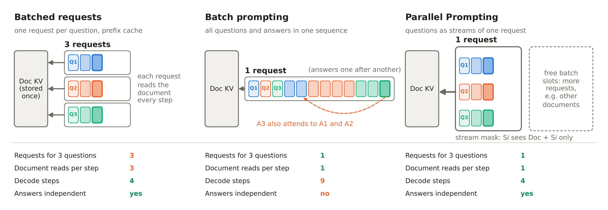
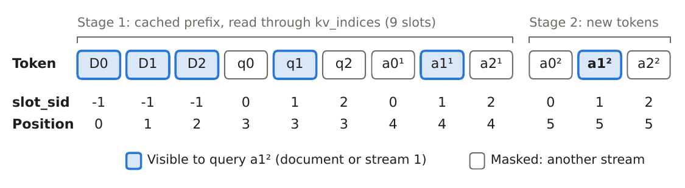
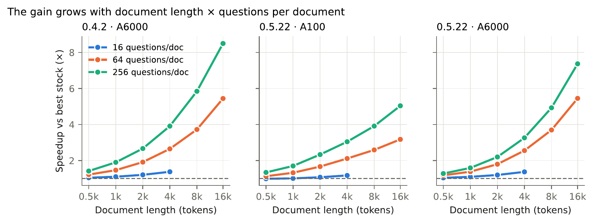
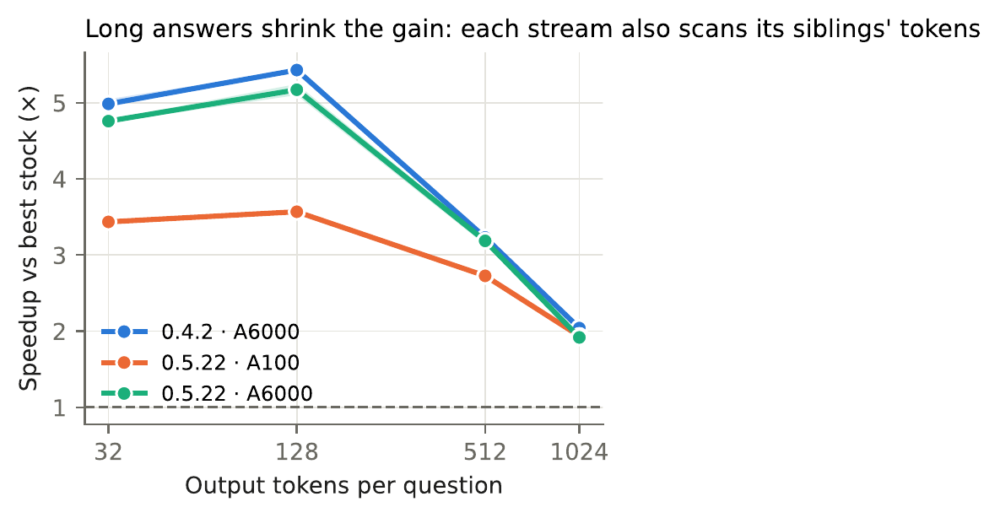

Saturn's inside is similar to Jupiter's inside. At the centre is a small rocky core that is about the size of the Earth. Saturn's core is very hot.
Q1: Saturn's inside is similar to what planet?
Q2: What is at the center of Saturn?
Q3: What is the temperature of Saturn's core?
Batch prompting also reads the document once, but it writes one answer after another, and later answers see the earlier ones. Parallel Prompting adds one token to every answer at each step and keeps the answers independent.
Speedup
Speedup of Parallel Prompting over stock SGLang, with CodeLlama-7B on 8k–16k-token documents and 64–256 questions each. Every run is paired: the same documents and questions are timed under each configuration on the same GPU.
(FlashInfer) on an A100
RTX A6000
2 GPUs and 2 SGLang releases
Geometric mean of 36 paired runs per setting; whiskers are 95% bootstrap confidence intervals. The dashed line is no speedup.
Show as a table
| SGLang · GPU | vs. FlashInfer | vs. Triton |
|---|
For example, Parallel Prompting answers 256 questions about a 16k-token document in 12.3 s, where stock SGLang needs 60.0 s (SGLang v0.4.2, A100).
Run the code
Parallel Prompting is an overlay on stock SGLang v0.5.22 and v0.4.2. Start from the official SGLang Docker image and copy it on:
git clone https://github.com/jlab-nlp/parallel-prompting.git
cd parallel-prompting
docker run --gpus all -it --shm-size 8g -v $PWD:/work -w /work \
lmsysorg/sglang:v0.5.22 bash
bash install.sh 0.5.22 # inside the containerThen pass one document and its questions to the engine; each question gets its own stream:
from sglang.srt.server_args import ServerArgs
from sglang.srt.parallel_prompt.engine import ParallelPromptEngine
args = ServerArgs(
model_path="codellama/CodeLlama-7b-Instruct-hf",
attention_backend="triton", sampling_backend="pytorch",
disable_cuda_graph=True, disable_radix_cache=True)
engine = ParallelPromptEngine(args, cuda_graph=True)
tok = engine.tokenizer
doc = tok.encode("Read the passage and answer briefly.\n\nPassage:\n...\n\n")
qs = [tok.encode(q, add_special_tokens=False)
for q in ["Question: Who ...?\nAnswer:",
"Question: When ...?\nAnswer:"]]
out = engine.generate([doc], [qs], max_new_tokens=64, parallel_size=2,
stop_token_ids=engine.default_stop_ids())
print([tok.decode(a) for a in out[0]]) # one answer per questionTo compare against stock SGLang on your own GPU:
cd sglang-0.5.22
python3 pp_bench/demo_gen.py --doc-tokens 12000 --num-questions 256 \
--answer-tokens 32 --parallel-size 32 --cuda-graph --compareThe README has the commands behind every table and figure in the paper.
Abstract
LLM workloads sometimes ask many independent questions about the same long document, as in document QA, data labeling and LLM-based evaluation. Prefix caching removes the redundant prefill shared by these queries, but each decode step still reads the document's key–value (KV) cache once per question, so decoding is bound by memory bandwidth and scales with the number of questions.
We present Parallel Prompting, which decodes P questions as P independent streams of a single request. Every step reads the shared document once for all P streams, and a stream-id attention mask, evaluated inside the attention kernel, keeps each answer conditioned only on the document and its own question. We implement it in SGLang by adding about 80 lines to three existing files and a small engine package; the mask needs no dense tensor, and every decode step has a fixed shape that is captured as a CUDA graph.
With CodeLlama-7B, 8k–16k-token documents and 64–256 questions per document, Parallel Prompting is 3.7× faster than stock SGLang with its FlashInfer backend on an A100 and 5.9–6.0× faster on an RTX A6000, on two SGLang releases. Timed on identical inputs, it is faster than stock SGLang in all 144 runs.
How it works
A serving engine already stores a shared document's KV cache once, but each question is still its own request, so every decode step reads the whole document once per question. Parallel Prompting puts P questions into one request and makes two small changes, so each answer is the same as decoding its question alone:

- A stream mask. Every KV slot carries a stream id (−1 for the document). A token of stream s attends only to the document and to earlier tokens of stream s. The rule is added to the causal mask inside SGLang's Triton attention kernel, so no dense mask is ever built.
- Shared positions. Every stream's positions start right after the document, as if its question were the only one.
Each decode step appends one token per stream and has a fixed shape, so it runs as one CUDA graph, and the document's KV is read once per step for all P streams.

More results
The gain grows with document length and the number of questions, from about 1× for a 512-token document with 16 questions to 5–6× at 8k–16k tokens with 256.

The gain shrinks for long answers, because each stream also scans its sibling streams' answer tokens. At 1,024-token answers it is still about 2×.
The best number of streams per request is 16–64 on every setting.

Real benchmarks
The whole benchmark, timed from an empty cache including document prefill, with Qwen2.5-7B-Instruct on an A100 and every configuration using SGLang's prefix cache.
| Configuration | QuALITY | Accuracy | LooGLE | Recall |
|---|---|---|---|---|
| Stock SGLang, FlashInfer | 133.2 s | 76.13 | 403.6 s | 83.41 |
| Stock SGLang, Triton | 155.9 s | 76.22 | 568.0 s | 83.77 |
| Parallel Prompting | 73.6 s | 75.89 | 508.3 s | 83.61 |
On QuALITY, whose answers are short, Parallel Prompting is 1.81× faster than the fastest stock setup. LooGLE's answers are long (234 tokens on average), which shrinks the gain: Parallel Prompting is 1.12× faster than stock Triton, which uses the same attention kernels, but slower than stock FlashInfer. Answer quality matches stock SGLang on both, and on SQuAD every paired confidence interval on the F1 difference contains zero.
Continuous batching
The engine can also refill its batch as requests finish, instead of waiting for the slowest one. This pays off when answer lengths differ: on QuALITY with every other article asking for an explanation, it needs 32% fewer decode steps and is 1.22× faster, with accuracy within 0.2 points. When all answers are equally long, it changes nothing.
Citation
@misc{zhao2026readonce,
title = {Read Once, Answer Many: Parallel Prompting for
Shared-Context {LLM} Inference},
author = {Zekun Zhao and Jeffrey Flanigan},
year = {2026},
url = {https://jlab-nlp.github.io/parallel-prompting/paper.pdf},
}